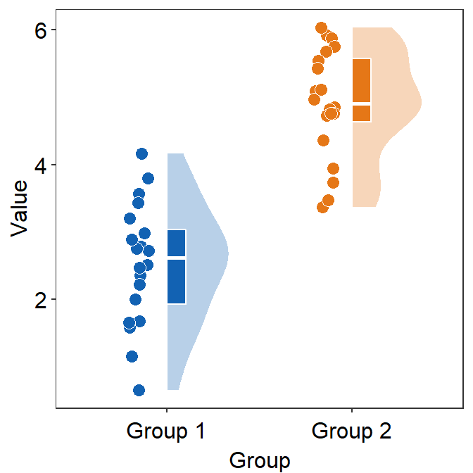
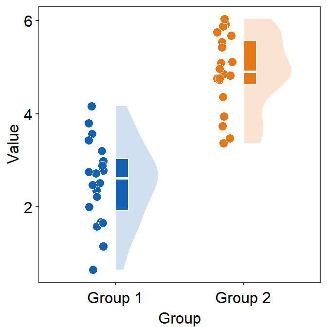
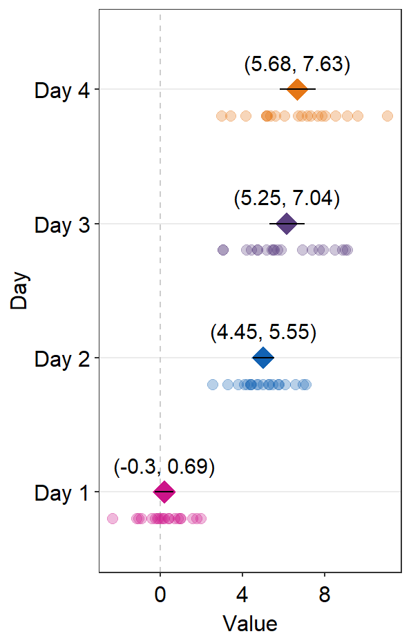
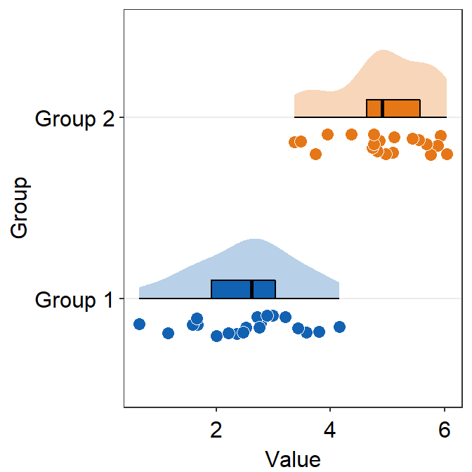
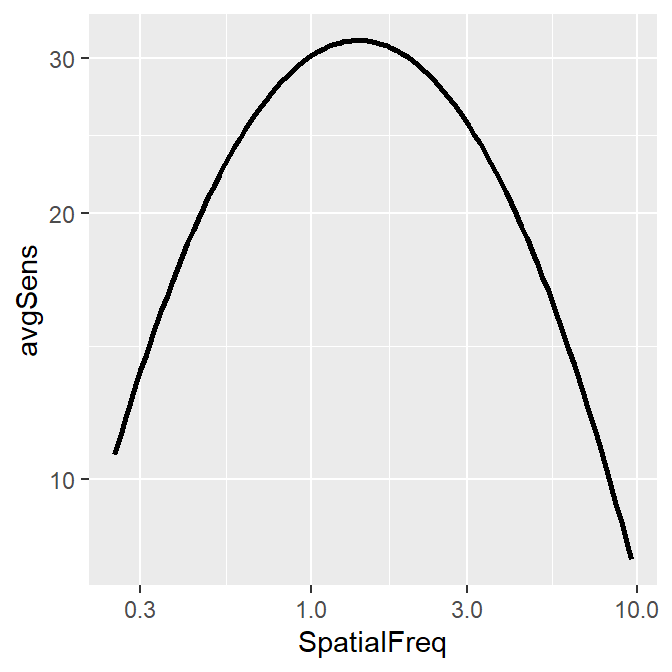
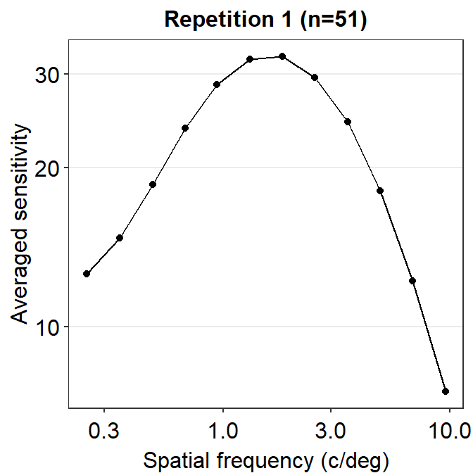

Chapter 13 Plotting the Contrast Sensitivity Function
For the next three chapters, we will use smCSF. Make sure you have downloaded it.
install.packages("devtools")
devtools::install_github('smin95/smCSF', force = TRUE)Also, we will use the data of achromatic contrast sensitivity from 51 normal observers from this paper (a subset of the entire dataset):
Kim, Y. J., Reynaud, A., Hess, R. F., & Mullen, K. T. (2017). A normative data set for the clinical assessment of achromatic and chromatic contrast sensitivity using a qCSF approach. Investigative ophthalmology & visual science, 58(9), 3628-3636.
Luckily, the data are publicly available. I have reorganized the data so that we could easily use them in the form of a data frame. Let’s load the data from online.
library(tidyverse)
library(smplot2)
library(smCSF)ACh <- read_csv('https://www.smin95.com/data_ACh.csv')head(ACh)## # A tibble: 6 x 4
## Subject Repetition SpatialFreq Sensitivity
## <chr> <dbl> <dbl> <dbl>
## 1 S1 1 0.25 23.8
## 2 S2 1 0.25 18.0
## 3 S3 1 0.25 14.2
## 4 S4 1 0.25 5.14
## 5 S5 1 0.25 16.0
## 6 S6 1 0.25 10.9There are four columns in this data frame:
First,
Subjectrefers to each participant. There are 51 participants total in the .csv file.Next,
Repetitionrefers to each repetition of the measurement The participants performed two repetitions of the contrast sensitivity measurement.SpatialFreqrefers to spatial frequency of the stimuli that were shown to test the observers’ contrast sensitivity. There are a total of 12 spatial frequencies.The
Sensitivitycolumn refers to the linear values of the contrast sensitivity.
13.1 Brief Introduction
The contrast sensitivity function (CSF) how the observer is sensitive to an image. This image could be large (low spatial frequency) or small (high spatal frequency). To obtain the CSF, the measurement test must measure the threshold. Threshold refers to the difference in stimulus magnitude between the states of presence and absence. If the observer can just barely discriminate between these two states of the visual stimulus, this can be described as the threshold for detection.
13.2 Data Visualization
First, let’s compute the average, standard errors and standard deviation using the dataset. It is recommended that the reader has read Chapters 5 and 6 already. Understanding of summarise(), filter(), mutate() and %>% is assumed.
The code below reorganizes the ACh dataset so that instead of containing the data of each subject, it now contains the averaged data across Repetition and SpatialFreq as well as their standard errors and standard deviations. We use mean() to compute the mean, sm_stdErr() the standard error, and sd() the standard deviation.
ACh_avg <- ACh %>%
group_by(Repetition, SpatialFreq) %>%
summarise(avgSens = mean(Sensitivity),
stdErrSens = sm_stdErr(Sensitivity),
stdDevSens = sd(Sensitivity))
ACh_avg## # A tibble: 24 x 5
## # Groups: Repetition [2]
## Repetition SpatialFreq avgSens stdErrSens stdDevSens
## <dbl> <dbl> <dbl> <dbl> <dbl>
## 1 1 0.25 12.6 0.743 5.31
## 2 1 0.35 14.7 0.777 5.55
## 3 1 0.49 18.6 0.993 7.09
## 4 1 0.68 23.7 1.22 8.71
## 5 1 0.94 28.7 1.36 9.68
## 6 1 1.31 32.0 1.40 9.99
## 7 1 1.83 32.4 1.43 10.2
## 8 1 2.54 29.6 1.39 9.93
## 9 1 3.54 24.3 1.22 8.70
## 10 1 4.93 18.1 0.960 6.85
## # ... with 14 more rowsLet’s create a variable that stores the data for each Repetition. Before we do that, however, it is important that we convert the data type of the Repetition column from <dbl> to <fct>, which refers from double to factor. Double refers to continuous data, whereas factor refers to categorical data.
ACh_avg$Repetition <- factor(ACh_avg$Repetition) # factor
ACh_avg1 <- ACh_avg %>% filter(Repetition == 1) # repetition 1
ACh_avg2 <- ACh_avg %>% filter(Repetition == 2) # repetition 2Let’s now plot the data for each repetition using ggplot2. Understanding of Chapters 1-4 is assumed.
ACh_avg1 %>% ggplot(aes(x = SpatialFreq, y = avgSens)) +
geom_point() +
sm_hgrid() +
xlab('Spatial frequency (c/deg)') +
ylab('Averaged sensitivity') +
ggtitle('Repetition 1 (n=51)')So far, this graph does not show the contrast sensitivity function, which has a rotund shape. Instead, if we connect the points, we get this plot instead.
ACh_avg1 %>% ggplot(aes(x = SpatialFreq, y = avgSens)) +
geom_point() +
geom_line() +
sm_hgrid() +
xlab('Spatial frequency (c/deg)') +
ylab('Averaged sensitivity') +
ggtitle('Repetition 1 (n=51)')
The function is still not a smooth, rotund shape. This is because it is standard to plot the contrast sensitivity function in log10 scales in both x and y axes. The code below shows the plot in the log scale.
ACh_avg1 %>% ggplot(aes(x = SpatialFreq, y = avgSens)) +
geom_point() +
geom_line() +
sm_hgrid() +
xlab('Spatial frequency (c/deg)') +
ylab('Averaged sensitivity') +
ggtitle('Repetition 1 (n=51)') +
scale_x_continuous(trans = 'log10') +
scale_y_continuous(trans = 'log10')
This plot shows the averaged sensitivity for each spatial frequency during the first repetition. However, the contrast sensitivity function is still missing because this plot instead shows the plot that is connected between a pair of the points. To plot the contrast sensitivity function with the data, sm_CSF() is required.
ACh_avg1 %>% ggplot(aes(x = SpatialFreq, y = avgSens)) +
sm_CSF()Notice that even if the data frame contains data in linear units, the plotted data from sm_CSF() are in log10 scales. It shows a nice, rotund shape that is typical of the contrast sensitivity function. The function can also plot the linear curve by setting sm_CSF(logXY = FALSE). The default is sm_CSF(logXY = TRUE).
ACh_avg1 %>% ggplot(aes(x = SpatialFreq, y = avgSens)) +
sm_CSF(logXY = FALSE)Now let’s plot a prettier contrast sensitivity function.
ACh_avg1 %>% ggplot(aes(x = SpatialFreq, y = avgSens)) +
sm_CSF(color = sm_color('wine')) +
geom_point(color = sm_color('darkred'), size = 3) +
sm_hgrid() +
xlab('Spatial frequency (c/deg)') +
ylab('Averaged sensitivity') +
ggtitle('Repetition 1 (n=51)') 
We can also plot the data using ACh_avg2, which contains data from the second repetition rather than first.
ACh_avg2 %>% ggplot(aes(x = SpatialFreq, y = avgSens)) +
sm_CSF(color = sm_color('lightgreen')) +
geom_point(color = sm_color('viridian'), size = 3) +
sm_hgrid() +
xlab('Spatial frequency (c/deg)') +
ylab('Averaged sensitivity') +
ggtitle('Repetition 2 (n=51)') 
Notice that sm_CSF() is written first because the curve has to appear before the points (geom_point()); else, the points will be covered by the CSF curve. This example is shown below.
ACh_avg2 %>% ggplot(aes(x = SpatialFreq, y = avgSens)) +
geom_point(color = sm_color('viridian'), size = 3) +
sm_CSF(color = sm_color('lightgreen')) +
sm_hgrid() +
xlab('Spatial frequency (c/deg)') +
ylab('Averaged sensitivity') +
ggtitle('Repetition 2 (n=51)') 
The curve appears later in this plot, so it covers some overlapping points.
smCSF also offers a function that fill the area of the CSF curve. This function is sm_areaCSF(). The default is set to plot the area in log10 scales, sm_areaCSF(logXY = TRUE).
ACh_avg1 %>% ggplot(aes(x = SpatialFreq, y = avgSens)) +
sm_areaCSF() +
sm_CSF() 
To plot the linear CSF and its area, logXY = FALSE has to be set FALSE in both sm_areaCSF() and sm_CSF(). The functions of smCSF have defaults logXY = TRUE, therefore, it is recommended that the user uploads a data frame that contains the linear data of spatial frequencies and contrast sensitivities. The functions then will convert them into log scale by default.
ACh_avg1 %>% ggplot(aes(x = SpatialFreq, y = avgSens)) +
sm_areaCSF(logXY = FALSE) +
sm_CSF(logXY = FALSE) 
We can make the area plot prettier.
ACh_avg2 %>% ggplot(aes(x = SpatialFreq, y = avgSens)) +
sm_areaCSF(fill = sm_color('lightgreen'), alpha = 0.5) +
sm_CSF(color = sm_color('viridian')) +
sm_hgrid() +
xlab('Spatial frequency (c/deg)') +
ylab('Averaged sensitivity') +
ggtitle('Repetition 2 (n=51)') +
scale_y_log10(limits = c(1,100)) +
annotate('text', x = 0.9, y = 1.3, label = 'Area under Log CSF')
You might get a warning that says Scale for 'y' is already present. Adding another scale for 'y', which will replace the existing scale. You can ignore this warning and not be worried about it. This is because we used the function scale_y_log10() on top of sm_CSF(), which actually calls forth the function scale_y_continuous() to convert the plot into log scales. Hence, there are two functions that serve the same purpose here, so the warning message is printed.
The smCSF package also offers a function that draws a ribbon shade to denote standard error or standard deviation. This function works exactly the same as geom_ribbon(). It requires the uses to specify ymin and ymax. The example below plots standard deviation using sm_ribbonCSF(), where ymin = avgSens - stdDevSens and ymax = avgSens + stdDevSens. As before, its default is logXY = TRUE. Therefore, even if ACh_avg2 contains data in linear units, the ribbon shade that is generated by sm_ribbonCSF() will be in log unit.
ACh_avg1 %>% ggplot(aes(x = SpatialFreq, y = avgSens)) +
sm_ribbonCSF(aes(ymin = avgSens - stdDevSens,
ymax = avgSens + stdDevSens)) +
sm_CSF() +
scale_y_log10(limits = c(1,100)) 
Let’s make the plot prettier using smplot.
ACh_avg1 %>% ggplot(aes(x = SpatialFreq, y = avgSens)) +
sm_ribbonCSF(aes(ymin = avgSens - stdDevSens,
ymax = avgSens + stdDevSens),
fill = sm_color('wine'), alpha = 0.4) +
sm_CSF(color = sm_color('darkred')) +
xlab('Spatial frequency (c/deg)') +
ylab('Averaged sensitivity') +
ggtitle('Repetition 1 (n=51)') +
sm_hgrid() +
scale_y_log10(limits = c(1,100)) 
You can also shade standard error instead, but the ribbon is barely visible.
ACh_avg2 %>% ggplot(aes(x = SpatialFreq, y = avgSens)) +
sm_ribbonCSF(aes(ymin = avgSens - stdErrSens,
ymax = avgSens + stdErrSens)) +
sm_CSF() +
scale_y_log10(limits = c(1,100)) 
As practice, let’s plot the averaged data across all repetitions.
ACh_avg_final <- ACh %>% group_by(SpatialFreq) %>%
summarise(avgSens = mean(Sensitivity),
stdErrSens = sm_stdErr(Sensitivity),
stdDevSens = sd(Sensitivity))
head(ACh_avg_final)## # A tibble: 6 x 4
## SpatialFreq avgSens stdErrSens stdDevSens
## <dbl> <dbl> <dbl> <dbl>
## 1 0.25 13.2 0.536 5.41
## 2 0.35 15.2 0.568 5.74
## 3 0.49 19.1 0.698 7.05
## 4 0.68 24.3 0.836 8.44
## 5 0.94 29.4 0.938 9.48
## 6 1.31 33.0 0.977 9.87Here is the new data frame ACh_avg_final.
ACh_avg_final %>% ggplot(aes(x = SpatialFreq, y = avgSens)) +
sm_ribbonCSF(aes(ymin = avgSens - stdDevSens,
ymax = avgSens + stdDevSens),
fill = sm_color('skyblue'), alpha = 0.25) +
sm_CSF(color = sm_color('blue'),
alpha = 0.4) +
xlab('Spatial frequency (c/deg)') +
ylab('Averaged sensitivity') +
ggtitle('Contrast Sensitivity (n=51)') +
sm_hgrid() +
geom_point(color = sm_color('blue'), size = 2.5) +
scale_y_log10(limits = c(1,100)) 
The standard deviation seems to be still broad.
13.3 Facetting the Contrast Sensitivity Functions
To facet means to split the plot into multiple plots based on a categorical variable (i.e., factor). We will facet the contrast sensitivity function plot above (the blue curve) into two panels based on two repetitions (red and green below).

To facet the plot, you need to have a data frame that has data with a column that specifies the categorical variable. For instance, let’s look at the data frame ACh_avg.
ACh_avg## # A tibble: 24 x 5
## # Groups: Repetition [2]
## Repetition SpatialFreq avgSens stdErrSens stdDevSens
## <fct> <dbl> <dbl> <dbl> <dbl>
## 1 1 0.25 12.6 0.743 5.31
## 2 1 0.35 14.7 0.777 5.55
## 3 1 0.49 18.6 0.993 7.09
## 4 1 0.68 23.7 1.22 8.71
## 5 1 0.94 28.7 1.36 9.68
## 6 1 1.31 32.0 1.40 9.99
## 7 1 1.83 32.4 1.43 10.2
## 8 1 2.54 29.6 1.39 9.93
## 9 1 3.54 24.3 1.22 8.70
## 10 1 4.93 18.1 0.960 6.85
## # ... with 14 more rowsWe see that the first column of Ach_avg has a column named Repetition which stores whether the given data are from the first or second repetition. To see all the unique levels of Repetition, we can use the function unique().
unique(ACh_avg$Repetition)## [1] 1 2
## Levels: 1 2To facet a plot using ggplot2, the function facet_wrap() has to be used.
ACh_avg %>%
ggplot(aes(x = SpatialFreq, y = avgSens)) +
sm_CSF() +
facet_wrap(~ Repetition) The argument inside facet_wrap has to include the tilde (~). The right side the tilde (~) should be the name of the categorical variable by which you wish to facet the plot. If the variable however happens to be continuous, facet_wrap() would not work properly.
ACh_avg %>%
ggplot(aes(x = SpatialFreq, y = avgSens)) +
sm_CSF() +
facet_wrap(~ stdErrSens) 
However, I do not often use facet_wrap() because the plot often ends up not being pretty. Let’s try to make it prettier.
ACh_avg %>%
ggplot(aes(x = SpatialFreq, y = avgSens,
group = Repetition, color = Repetition,
fill = Repetition)) +
sm_ribbonCSF(aes(ymin = avgSens - stdDevSens,
ymax = avgSens + stdDevSens), alpha = 0.4) +
sm_CSF(alpha = 0.4) +
sm_hgrid() +
geom_point(size = 2.5) +
scale_fill_manual(values = sm_color('wine','lightgreen')) +
scale_color_manual(values = sm_color('darkred','viridian')) +
xlab('Spatial frequency (c/deg)') +
ylab('Averaged sensitivity') +
facet_wrap(~ Repetition) +
scale_y_log10(limits = c(1,100))
Personally, I do not like the grey-filled header of each panel. Since I personally will find myself repeatedly bypassing the default grey color into a color of my choice, I have created the function myself sm_facet_header() as part of the smCSF package.
ACh_avg %>%
ggplot(aes(x = SpatialFreq, y = avgSens,
group = Repetition, color = Repetition,
fill = Repetition)) +
sm_ribbonCSF(aes(ymin = avgSens - stdDevSens,
ymax = avgSens + stdDevSens), alpha = 0.4) +
sm_CSF(alpha = 0.4) +
sm_hgrid() +
geom_point(size = 2.5) +
scale_fill_manual(values = sm_color('wine','lightgreen')) +
scale_color_manual(values = sm_color('darkred','viridian')) +
xlab('Spatial frequency (c/deg)') +
ylab('Averaged sensitivity') +
facet_wrap(~ Repetition) +
scale_y_log10(limits = c(1,100)) +
sm_facet_header()
Now the title of each plot has been bolded and the filled color is white. I personally think that this plot is a lot cleaner than the default one.
Next, I wish to change the titles of each panel because 1 and 2 are not descriptive. To do so, we need to use the argument labeller within facet_wrap() to specify the title of each panel.
ACh_avg %>%
ggplot(aes(x = SpatialFreq, y = avgSens,
group = Repetition, color = Repetition,
fill = Repetition)) +
sm_ribbonCSF(aes(ymin = avgSens - stdDevSens,
ymax = avgSens + stdDevSens), alpha = 0.4) +
sm_CSF(alpha = 0.4) +
sm_hgrid() +
geom_point(size = 2.5) +
scale_fill_manual(values = sm_color('wine','lightgreen')) +
scale_color_manual(values = sm_color('darkred','viridian')) +
xlab('Spatial frequency (c/deg)') +
ylab('Averaged sensitivity') +
facet_wrap(~ Repetition,
labeller = as_labeller(c('1' = 'Repetition 1',
'2' = 'Repetition 2'))) +
scale_y_log10(limits = c(1,100)) +
sm_facet_header(font_size=11) We use the function as_labeller() as part of the argument labeller() inside facet_wrap() to specify that factor level 1 should be shown as Repetition 1 and 2 as Repetition 2.
We can also change the number of rows and columns using facet_wrap(). Lets make a data frame that has 4 repetitions instead of 2.
set.seed(1)
spatFreqNum <- length(unique(ACh_avg$SpatialFreq))
ACh_avg_4rep <- rbind(ACh_avg,ACh_avg)
ACh_avg_4rep$Repetition <- rep(1:4,each=spatFreqNum)
ACh_avg_4rep[25:nrow(ACh_avg_4rep), 3:5] <- ACh_avg_4rep[25:nrow(ACh_avg_4rep), 3:5] + round(rnorm(24),1)
ACh_avg_4rep$Repetition <- factor(ACh_avg_4rep$Repetition)We can specify the number of columns (ex. ncol = 2) and rows (ex. nrow = 2) inside the function facet_wrap(), as shown in the example below.
ACh_avg_4rep %>%
ggplot(aes(x = SpatialFreq, y = avgSens,
group = Repetition, color = Repetition,
fill = Repetition,
alpha = Repetition)) +
sm_ribbonCSF(aes(ymin = avgSens - stdDevSens,
ymax = avgSens + stdDevSens)) +
sm_CSF(alpha = 0.4) +
sm_hgrid() +
geom_point(alpha = 1, size = 2.5) +
scale_fill_manual(values = sm_color('wine','lightgreen','yelloworange', 'crimson')) +
scale_color_manual(values = sm_color('darkred','viridian', 'orange','red')) +
scale_alpha_manual(values = c(0.4,0.4,0.3,0.1)) +
xlab('Spatial frequency (c/deg)') +
ylab('Averaged sensitivity') +
facet_wrap(~ Repetition, nrow=2, ncol=2,
labeller = as_labeller(c('1' = 'Repetition 1',
'2' = 'Repetition 2',
'3' = 'Repetition 3',
'4' = 'Repetition 4'))) +
scale_y_log10(limits = c(1,100)) +
sm_facet_header(font_size=11)
Notice that when facet_wrap() is used, there is no need to create variable for each plot like we have done in Chapter 5 and use sm_common_axis(). The preference can vary depending on the user. Rather than using facet_wrap(), however, I still prefer to store each plot separately so that I can have freedom to decide where to place each panel wherever I want using sm_common_axis().
Also, make sure that when you combine the plots using facet_wrap() you set the size of the figure properly within the save_plot() function or else the figure will appear to be too crowded. You can use base_height and base_width arguments within facet_wrap().
Another issue with plotting each contrast sensitivity function per panel is that it is visually difficult to compare whether the functions between the panels are different. One way to overcome this problem is to plot all the plots together. In this case, legend is necessary, which can be generated using sm_hgrid(legends = TRUE). Let’s use the data frame ACh_avg which has two levels in the Repetition column.
ACh_avg %>%
ggplot(aes(x = SpatialFreq, y = avgSens,
group = Repetition, color = Repetition,
fill = Repetition)) +
sm_ribbonCSF(aes(ymin = avgSens - stdDevSens,
ymax = avgSens + stdDevSens), alpha = 0.2) +
sm_CSF(alpha = 0.4) +
sm_hgrid(legends = T) +
scale_fill_manual(values = sm_color('wine','lightgreen')) +
scale_color_manual(values = sm_color('darkred','viridian')) +
xlab('Spatial frequency (c/deg)') +
ylab('Averaged sensitivity') +
scale_y_log10(limits = c(1,100)) +
theme(legend.position = c(0.8,0.2)) +
ggtitle('Achromatic CSF (n=51)')
We see that these two curves are nearly identical, except that the green curve is uniformly higher than the red curve.
In the next chapter, we will discuss about some techniques on how to analyze contrast sensitivity data.